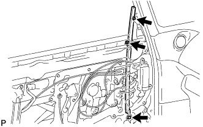
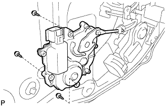
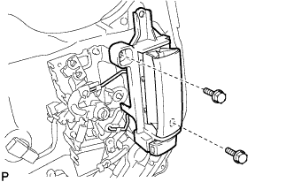
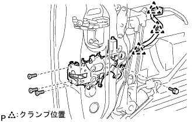
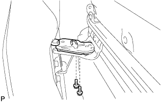
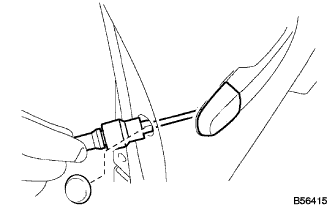

Remove the sliding door |
| 1. Remove the rear door window frame molding FR LH |
 |
Put a protective tape on the sliding door panel.
Remove the junction of the acrylic form tape and the five clips, and remove the rear door window frame molding FR LH.
| 2. Reardoor window frame molding RR LH removed |
 |
Put a protective tape on the sliding door panel.
Remove the junction of the acrylic form tape and the four clips, and remove the rear door window frame molding RR LH.
| 3. Front doorskuff plate LH removed |
 |
Pull it up by hand, remove the claw from behind the vehicle, and remove the front door skatif plate LH.
| 4. Deck side trim cover FR LH removed |
 |
Pull it in front of the vehicle by hand, remove the claws, and remove the Detsuki side trim cover FR LH.
| 5. Multiplex network switch ASSY removed |
Use a flathead screwdriver with a protective tape to remove the claws.
Cut the connector and remove the multiplex network switch ASSY with the front armrest base panel UPR LH.
 |
Remove the claws and separate the multiplex network switch ASSY from the front armrest base panel UPR LH.
| 6. Remove the door frame garnish LH |
 |
Remove the clip and remove the door frame garnish LH.
| 7. Remove the front door trim board SUB-ASSY LH |
Take off the screw.
 |
Remove the clip and remove the front door trim board LH.
| 8. Remove the front door glass woeza strip INN LH |
Remove the claws and remove the front door trim board LH from the LH.
| 9. Remove the front door glass Otowauzestrip clip |
 |
Put a protective tape on the door panel side along the front door glass Otowza strip clip.
Use the roof molding rimba to remove the claws and remove the sliding door glass woeza strip Assy Out LH.
| 10. Remove the front door wire LH |
Remove the bolt and separate the earth clamp.
Remove the bolt of the rotating clamp.
Take off 5 bolts.
Separate each connector and each clamp.
 |
Use the clip resover to remove the two clips and remove the front door wire LH.
| 11. Sliding door service hall cover removed |
| 12. Sliding door glass run No.1 LH removed |
| 13. Slide door window guide, FR LH removed |
|  |
Remove two nuts and one bolt, and remove the sliding door window guide, FR LH.
| 14. Sliding door glass No.1 LH removed |
Take off the plug hole.
Connect the front door wire LH and multiplex network switch assessy and move the sliding door glass No.1 LH to the position of the figure (where the mounting bolt is visible).
 |
Remove the two bolts, pull out the sliding door glass No.1 LH outdoors and remove it.。
| 15. Remove the door control relay |
 |
Remove the two screws and remove the door control relay.
| 16. Module ASSY removes |
 |
Cut each cable.
Remove 11 bolts and remove the module ASSY.
| 17. Power window regulator motor ASSY LH is removed |
 |
Use the Torxo Socket Wlen (T25) to remove the three screws and remove the power window regulator motor ASSY LH from the module ASSY.
| 18. Sliding door half -stop control lever LH removed |
 |
Use a flathead screwdriver to remove the claws and remove the sliding door half -stop control lever LH from the module ASSY.
| 19. The front door window regulator SUB-ASSY LH is removed |
 |
Remove the two bolts and remove the front door window regulator LH from the module ASSY.
| 20. Automatic door regulator motor ASSY is removed |
|  |
Take off the three screws.
Cut the output lever and remove the automatic door regulator motor ASSY from the module ASSY.
| 21. Remove the front door inside handle SUB-ASSY LH |
|  |
Remove two bolts.
Cut the two links and remove the front door inside handle LH from the module ASSY.
| 22. Remove the front de arock actuator Assy LH |
 |
Remove the three screws and remove the front door lock actuator Assy LH from the module asser.
| 23. Fronted Arrock Limote Control ASSY LH is removed |
 |
Remove the three bolts and the connector clamp, and remove the front door lock remote control ASSY LH from the module ASSY.。
| 24. |
Remove the bolt and remove the front door Stiffuna Cotion No.2.
| 25. Power slide door lock ASSY No.1 LH removed |
|  |
Separate the cable clamp.
Take off one bolt.
Remove the three screws with the Torxo Socket Wrest (T30), and remove the power slide door lock ASSY No.1 LH into the indoor side.
| 26. Power sliding door sensor ASSY LH is removed |
Take off the cable clamp.
 |
Remove 5 screws and two clips, and remove the power sliding door sensor ASSY LH.
| 27. Slide door Full open stop lock ASSY No.1 LH removed |
 |
Remove two bolts.
Cut the cable and remove the sliding door full open stop lock ASSY No.1 LH.
| 28. Sliding door lock ASSY FR LH removed |
 |
Use the Torxo Socket Wlen (T30) to remove the four screws.
Remove the bolt and remove the sliding door lock ASSY FR LH.
| 29. Sliding door Front lock hook ASSY removes |
Remove the four bolts and remove the sliding door Front lock hook ASSY.
| 30. Sliding door downhymel stopper removed |
Remove the two bolts and remove the sliding door downhey mel stopper.
| 31. Sliding door center cover LH removed |
 |
Remove the six clips and remove the sliding door center rail cover LH.
| 32. Sliding door motor ASSY No.1 removed |
 |
Remove the tensioner (open side and closed side) from the bracket.
|  |
Remove the two bolts and remove the driven plate.
 |
Remove the six bolts and remove the sliding door motor ASSY No.1.
| 33. The front door out -side handle cover LH is removed |
Take off the plug hole.
|  |
Use a Turksket wrench (T30) to remove the screw and remove the front door -out side handle cover LH.
| 34. Remove the front door outdoor handle ASSY LH |
Pull the front door outside handle ASSY LH outside the vehicle, slide it forward, and remove it from the front door outside handle ASSY LH.
 |
Remove the front door -out side handle pats and the rearfront door outside handle patsdo RR.
| 35. Remove the front door out side handle LH |
Use a torxo wrench (T30) to remove the screw and slide the front door outside handle LH in front of the vehicle.
| 36. Slide door Appa Rail cushion LH removed |
| 37. Slide door Rower rail plate LH removed |
 |
Remove one bolt and remove the slide door rower rail plate LH.
| 38. Sliding door LH removed |
 |
Sliding door Laura Assy LWR LH portion is extracted from the slide door rail LWR.
Slide dramatic Laura Assy UPR LH is extracted from the slide door rail UPR.
Move the sliding door LH backward, pull out the sliding door hinge ASSY CTR LH from the slide door Rail CTR LH, and remove the sliding door LH.
| 39. Sliding door hinge ASSY Ctr LH removed |
Remove the three bolts and separate the sliding door hinge ASSY CTR LH from the slide door panel.
| 40. Sliding door Laura ASSY UPR LH removed |
Remove the two bolts and remove the slide doororola Assy Upr LH.
| 41. Sliding door Laura ASSY LWR LH removed |
Remove the three bolts and remove the slide door roller ASSY LWR LH.